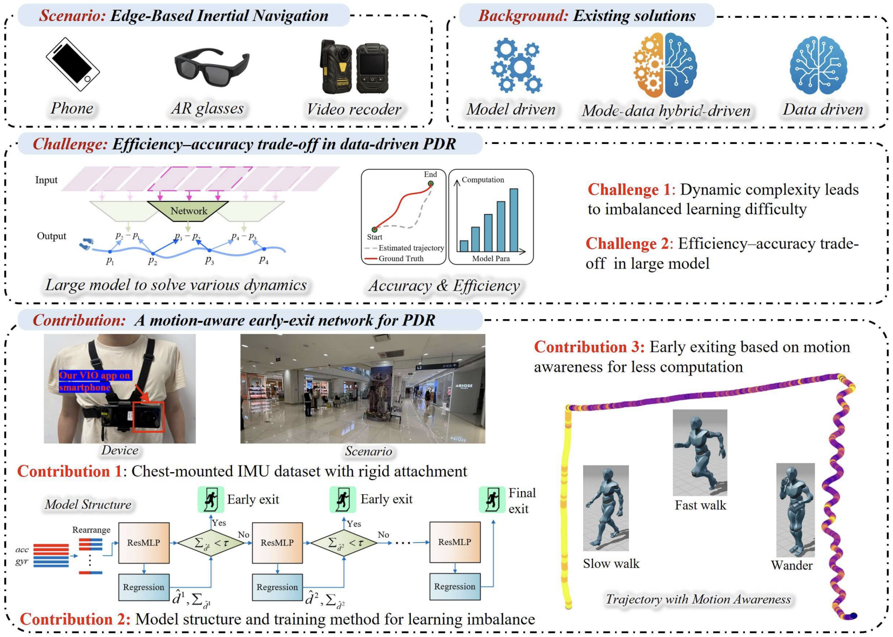

2025
MEIO-Net: A Motion-Aware Early-Exit Inertial Odometry Network for Efficient Pedestrian Dead Reckoning (PDR)
Sun X, Li Y, Wang Y, et al. MEIO-Net: A Motion-Aware Early-Exit Inertial Odometry Network for Efficient Pedestrian Dead Reckoning (PDR)[J]. IEEE Internet of Things Journal, 2025.
IEEE Xplore